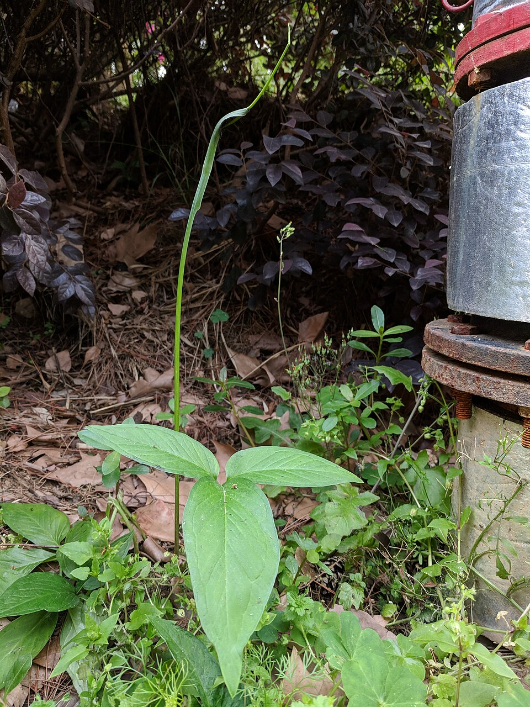
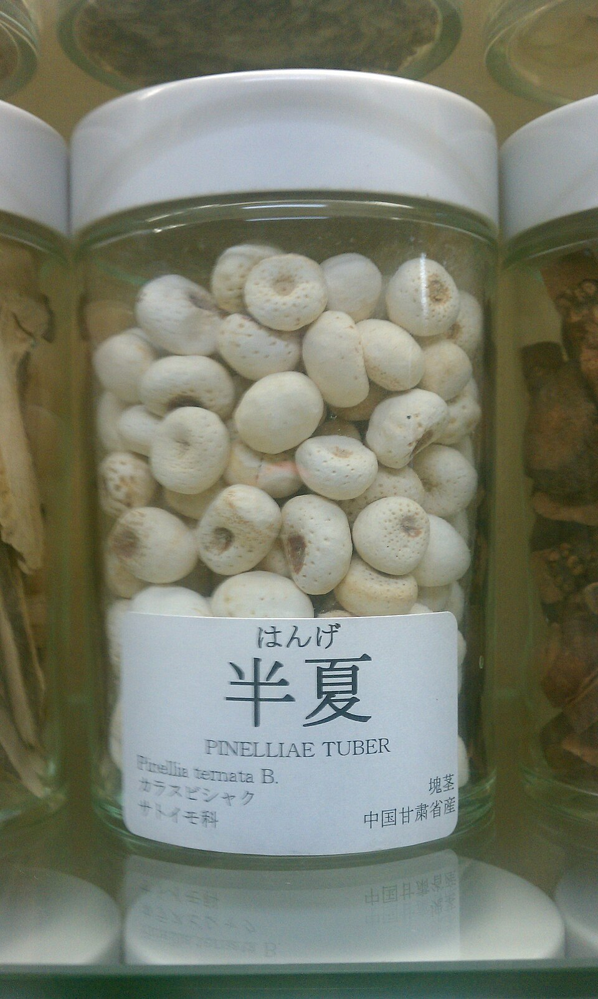

Bànxià · Pinellia tuber半夏
Pinelliae Rhizoma · Herbs that resolve phlegm, relieve cough and calm wheezingPinelliae Rhizoma · 化痰止咳平喘药




- Flavour · nature性味
- acrid; warm辛，温
- Channels归经
- Spleen, Stomach, Lung脾、胃、肺经
- Direction升降浮沉
- Pungent, warm and drying, it primarily enters the spleen, stomach and lung channels. It dries dampness and transforms phlegm while directing rebellious stomach qi downward to stop vomiting. It is particularly associated with damp phlegm, cold phlegm and upward-rebellious stomach qi.辛温而燥，主入脾、胃、肺经，既能燥湿化痰，又能降胃气止呕；善于处理湿痰、寒痰及胃气上逆。
- Toxicity毒性
- Toxic有毒
- Dose (pharmacopoeia)用量（药典）
- 3–9 g (ceiling 9 g)（上限 9 克）
Decoct 3–9 g. Internal administration uses pharmacopoeially processed forms, commonly Qing Ban Xia, Jiang Ban Xia or Fa Ban Xia. Their processing requirements and appropriate uses differ. Internal use of raw Ban Xia requires strict compliance with pharmacopoeial and professional processing requirements and must never be undertaken independently. For external use, apply an appropriate amount under professional guidance.煎服，3–9 克。内服使用药典规定的炮制品，常见有清半夏、姜半夏、法半夏；不同炮制品的适用范围与加工要求不同。生半夏内服须严格遵循药典及专业炮制要求，不得自行使用。外用适量，遵医嘱。 - Pregnancy孕期
- Caution in pregnancy孕妇慎用 The 2020 Chinese Pharmacopoeia entry for Ban Xia lists no pregnancy caution; its notes cover only the Aconitum incompatibility and caution with the raw herb. This site still treats pregnancy with caution for two reasons. In pregnant rats, 30 g/kg of raw or processed Ban Xia decoction significantly increased vaginal bleeding and dead embryos (an animal dose that cannot be converted into a human threshold). Health Canada's TCMI monograph also requires every product it covers to warn against use during pregnancy or breastfeeding. A missing pharmacopoeial entry does not prove safety in pregnancy.《中国药典》2020 年版半夏项下「注意」只写不宜与川乌、制川乌、草乌、制草乌、附子同用及生品内服宜慎，未列孕期条；本站孕期从严按慎用，依据有二：其一，大鼠妊娠实验中生半夏或炮制半夏煎剂 30 g/kg 组阴道出血与死胚显著增加（动物剂量，不能直接换算为人体风险阈值）；其二，加拿大卫生部 TCMI 专论要求全部收录产品标注孕期或哺乳期勿用。药典未列不等于已证明孕期安全。
- Health Canada加拿大卫生部
- Health Canada: monograph加拿大卫生部：有专论 Health Canada's Natural Health Products Ingredients Database Traditional Chinese Medicine Ingredients monograph (TCMI, May 29, 2026) lists three processed forms of Pinellia ternata: Fa Ban Xia and Zhi Ban Xia (Rhizoma Pinelliae Praeparatum); Qing Ban Xia (Rhizoma Pinelliae Praeparatum cum Alumine); and Jiang Ban Xia (Rhizoma Pinelliae Praeparatum cum Zingibere et Alumine). All three are listed in Table 3 and are allowable only when prepared and used according to the specifications in the NHPID. Table 3 inclusion does not authorize unrestricted use of unprocessed raw Ban Xia or mean that every Pinellia product is approved for sale. The monograph requires all relevant products to state: do not use during pregnancy or breastfeeding; consult a healthcare practitioner before use if taking prescription medicines or having a serious medical condition or acute infection; and discontinue use and consult a healthcare practitioner if symptoms persist or worsen.加拿大卫生部 NHPID 的传统中药成分专论（TCMI，2026 年 5 月 29 日）收录 Pinellia ternata 的三种炮制形式：Fa ban xia、Zhi ban xia（Rhizoma Pinelliae Praeparatum）；Qing ban xia（Rhizoma Pinelliae Praeparatum cum Alumine）；Jiang ban xia（Rhizoma Pinelliae Praeparatum cum Zingibere et Alumine）。三者均列于 Table 3，只有按照 NHPID 规定的炮制规格及使用条件制备和使用时才允许纳入相应产品。Table 3 的收录不代表未经炮制的生半夏可以自由使用，也不代表所有半夏产品均获准上市。专论要求所有相关产品标注：孕期或哺乳期勿用；服用处方药、有严重疾病或急性感染者，使用前咨询医务人员；症状持续或加重时停止使用并就医。
- Conservation资源与保护
- Pinellia ternata occurs in both cultivated and wild populations and does not belong to the prohibited medicinal-material categories identified in this entry, such as rhinoceros horn, tiger bone, pangolin, musk or bear bile. Harvesting should follow local plant conservation and medicinal-material production requirements.半夏为栽培与野生分布均有的药用植物，未列入本题来源所提示的犀角、虎骨、穿山甲、麝香、熊胆等禁用药材类别。采收应遵循当地植物资源保护及药材生产规范。
- Source来源
- Pinellia ternata (Thunb.) Breit.. The dried tuber of Pinellia ternata, a member of the arum familyPinellia ternata (Thunb.) Breit.。天南星科植物半夏的干燥块茎
Toxicity: what goes wrong毒理：会出什么事
The irritant toxicity of Ban Xia is associated with needle-shaped crystals and other irritating constituents in the tuber. These crystals can mechanically irritate the oral, lingual and pharyngeal mucosa, causing burning pain, numbness, salivation, swelling and difficulty swallowing. Severe exposure may cause laryngeal swelling and airway obstruction. Raw material is particularly irritating. Processing methods used to produce Qing Ban Xia, Fa Ban Xia and Jiang Ban Xia are intended in part to reduce irritation and toxicity. The relative contribution of individual toxic constituents and the human toxic dose cannot be established from the available sources.半夏的刺激性毒性与块茎中的针晶及其他刺激性成分有关。针晶可对口腔、舌、咽喉黏膜产生机械性刺激，造成灼痛、麻木、流涎、肿胀及吞咽困难；严重时可能出现喉部水肿和呼吸受阻。生品刺激性较强，清半夏、法半夏、姜半夏经过不同炮制处理，目的之一就是降低刺激性和毒性。具体毒性成分的相对贡献及人体中毒剂量尚不能仅凭现有来源确定。
Traditional actions and indications功效与主治（传统）
🏛 Traditional statements, not efficacy claims; the modern evidence is graded further down.以下为传统说法，不是疗效主张；现代证据见下文分级。
- Dries dampness and transforms phlegm燥湿化痰
- Directs rebellious qi downward and stops vomiting降逆止呕
- Disperses focal distension and dissipates nodules消痞散结
Used for profuse phlegm and cough with wheezing due to damp or cold phlegm; dizziness and palpitations due to retained phlegm-fluid; dizziness due to wind-phlegm; and headache due to phlegm syncope. It is also used for vomiting and regurgitation caused by rebellious stomach qi, chest and epigastric focal distension, and plum-pit qi. Raw Ban Xia may be used externally for abscesses and phlegm nodules, but internal administration must follow appropriate processing requirements.用于湿痰寒痰所致的痰多咳喘、痰饮眩悸、风痰眩晕、痰厥头痛；胃气上逆所致的呕吐、反胃；胸脘痞闷、梅核气。生半夏外用可用于痈肿痰核，但内服应遵循炮制要求。
How to recognise it怎么认
Growing植株 A perennial herb, usually relatively short. It has a spherical or nearly spherical underground tuber with a yellowish-white to pale yellow exterior. Slender petioles emerge from the tuber. Young plants often have simple leaves, whereas mature plants generally have three-part compound leaves with oval to lance-shaped leaflets and mostly entire margins. Its inflorescence is a typical aroid spadix surrounded by a green spathe, with male flowers above and female flowers below. Small bulbils commonly develop at the base of the petiole or on the leaves and are useful identifying features.多年生草本植物，植株通常较矮。地下有球形或近球形块茎，外表黄白色至淡黄色。叶通常从块茎抽生，叶柄细长；幼株叶片多为单叶，成年植株叶片通常为三出复叶，小叶椭圆形至披针形，边缘较完整。花序为天南星科典型的肉穗花序，外有绿色佛焰苞，花序轴上部为雄花、下部为雌花。叶柄基部或叶片上常可见珠芽，这是识别半夏植株的重要特征。
Decoction pieces饮片 Raw Ban Xia tubers are nearly spherical or somewhat oblate, approximately 0.8–2 cm in diameter. Their surfaces are white to pale yellow, with a depressed stem scar at the apex and numerous brown, dot-like root scars around it. They are firm, with a white, powdery cut surface. Processed pieces are generally irregular granules or slices, and their colours vary with the processing method. Qing Ban Xia is pale yellowish-white to pale yellow and relatively firm. Jiang Ban Xia is yellowish-brown to dark brown and may show features associated with ginger processing. Fa Ban Xia is pale yellowish-white to yellow and relatively loose in texture. The odour is slight, and the taste is pungent and irritating to the tongue. Raw material must never be tasted as a method of identification.生半夏块茎呈类球形或偏斜的扁球形，直径约 0.8–2 厘米，表面白色至浅黄色，顶端有凹陷的茎痕，周围密布棕色点状根痕，质坚实，断面洁白、富粉性。炮制饮片通常呈不规则颗粒状或片状，颜色随炮制方法变化：清半夏表面淡黄白色至淡黄色，质较坚实；姜半夏表面棕黄色至棕褐色，常可见姜汁加工痕迹；法半夏表面淡黄白色至黄色，质较疏松。气微，味辛辣而麻舌，未经炮制的饮片不可通过品尝鉴别。
No photo of the processed forms used in prescriptions; the jar shows dried tubers.缺法半夏、姜半夏等炮制饮片照；现有为日本生药标本的块茎。
Processing炮制
- Qing Ban Xia清半夏：: Made by soaking and processing raw Ban Xia in an alum solution, followed by drying. This processing primarily reduces irritation, and the resulting form is mainly used to dry dampness and transform phlegm.以生半夏为原料，用白矾溶液浸泡、处理后干燥。主要用于降低生品刺激性，偏于燥湿化痰。
- Jiang Ban Xia姜半夏：: Made by processing raw Ban Xia with ginger juice, alum and the prescribed processing steps. This form has reduced irritation and is particularly associated with directing rebellious qi downward and stopping vomiting.以生半夏为原料，经姜汁、白矾等规定工艺炮制。降低刺激性，偏于降逆止呕。
- Fa Ban Xia法半夏：: Made by processing raw Ban Xia with prescribed auxiliary materials such as licorice and lime. This form has reduced irritation and is particularly associated with drying dampness and transforming phlegm.以生半夏为原料，按规定使用甘草、石灰等辅料炮制。降低刺激性，偏于燥湿化痰。
Cautions and incompatibilities使用注意与配伍禁忌
Ban Xia is poisonous and must be processed according to the applicable standards before internal use. Raw Ban Xia requires caution and must not be used independently without proper processing. The pharmacopoeia lists no pregnancy caution, but this site advises caution during pregnancy; also follow Health Canada's product warnings for pregnancy and breastfeeding. Use cautiously in dry cough associated with yin deficiency or depletion of body fluids. Ban Xia is traditionally incompatible with Aconitum herbs, including Chuan Wu, Cao Wu and Fu Zi, under the eighteen incompatibilities. Do not increase the dose or use it long term without professional supervision. Oral numbness, throat swelling, hoarseness or difficulty swallowing require immediate medical attention. Call 911 for breathing difficulty.有毒，内服必须使用符合规定的炮制品；生半夏内服宜慎，不可自行使用未经规范炮制的生品。药典未列孕期条，本站孕期从严按慎用，孕期及哺乳期还应遵守加拿大卫生部产品警示。阴虚燥咳、津液亏耗者慎用。半夏反乌头类药物，不宜与川乌、草乌、附子等同用，属于十八反。避免自行加量或长期服用。出现口舌麻木、咽喉肿胀、声音嘶哑或吞咽困难，应立即就医；呼吸困难立即拨打 911。
- Ban Xia is traditionally incompatible with Aconitum herbs. Chuan Wu belongs to this group and should not be combined with it.半夏反乌头类，川乌属于乌头类药物，不宜同用。 eighteen incompatibilities十八反
- Ban Xia is traditionally incompatible with Aconitum herbs. Cao Wu belongs to this group and should not be combined with it.半夏反乌头类，草乌属于乌头类药物，不宜同用。 eighteen incompatibilities十八反
- Ban Xia is traditionally incompatible with Aconitum herbs. Fu Zi belongs to this group and should not be combined with it.半夏反乌头类，附子属于乌头类药物，不宜同用。 eighteen incompatibilities十八反
- The pharmacopoeia states that Ban Xia should not be combined with processed Chuan Wu.药典半夏项下写明不宜与制川乌同用。 eighteen incompatibilities十八反
- The pharmacopoeia states that Ban Xia should not be combined with processed Cao Wu.药典半夏项下写明不宜与制草乌同用。 eighteen incompatibilities十八反
Interactions with medicines与西药的相互作用
The dedicated sources supplied for this entry do not establish a specific clinical drug interaction between Ban Xia tuber and any Western medicine. A systematic review and meta-analysis examined Ban Xia-containing traditional Chinese medicine combined with 5-HT3 receptor antagonists for chemotherapy-induced nausea and vomiting. Combination-treatment research alone does not establish a pharmacokinetic interaction or a specific interaction mechanism. A 2026 computational prediction study of Pinellia phytochemicals and multi-target mechanisms also does not constitute clinical interaction evidence. This absence of confirmed evidence does not establish that Ban Xia is free of interactions with all medicines. People taking prescription medicines should consult a physician or pharmacist before use.在本题提供的专门检索来源中，未找到能够确认半夏饮片与某种西药之间存在明确临床药物相互作用的人体证据。半夏与 5-HT3 受体拮抗剂联合用于化疗相关恶心呕吐的系统综述及 Meta 分析，属于联合治疗研究，不能仅凭联合使用就认定存在药代动力学相互作用或相互作用机制。2026 年有关半夏植物化学成分与多靶点机制的计算机预测研究也不能作为临床相互作用证据。不能据此断言半夏与所有西药均无相互作用；服用处方药者应先向医师或药师咨询。
Modern research, graded现代研究（分级）
- E1 A 2025 systematic review of Pinellia ternata covered botany, ethnopharmacology, phytochemistry, preclinical research and clinical evidence. Its stated conclusion was primarily to provide information and recommendations for further research and herbal medicine development. It does not establish that the clinical efficacy of the Ban Xia tuber has been adequately validated in humans.2025 年发表的半夏系统综述涵盖植物学、民族药学、植物化学、临床前研究及临床证据，研究对象为半夏及其相关研究资料。摘要所给结论主要是为进一步研究和中药开发提供信息与建议，不能据此认定半夏饮片已具有经过充分验证的人体临床疗效。
- E1 A 2023 systematic review and meta-analysis of 22 randomised trials compared Pinellia-containing Chinese medicine plus 5-HT3 receptor antagonists with the antagonists alone for chemotherapy-induced nausea and vomiting. Its abstract concludes that the combination was safer and more effective, while noting that the included trials were of limited quality and more high-quality trials are needed. The studies tested multi-herb formulas, not Ban Xia alone.2023 年一项系统综述与荟萃分析纳入 22 项随机对照试验，比较含半夏中药联合 5-HT3 受体拮抗剂与单用 5-HT3 受体拮抗剂处理化疗所致恶心呕吐。摘要结论是联合组更安全、效果更好，但作者同时说纳入研究质量有限，需要更多高质量试验验证。研究对象是含半夏的复方，不是单味半夏。
- E5 A 2001 human case report documented IgE-mediated occupational asthma in a worker exposed to the Banha herbal medicine derived from Pinellia ternata. The report indicates that Pinellia-derived allergens can cause bronchoconstriction, so workers exposed to herbal dust should consider the risk of inhalational sensitisation. This case report concerns occupational allergen exposure and does not mean that oral administration of processed Ban Xia necessarily causes asthma.2001 年人体病例报告记录了接触半夏来源草药 Banha 的工作人员发生 IgE 介导的职业性哮喘。研究提示半夏来源过敏原可引起支气管收缩，职业性粉尘暴露者应注意吸入致敏风险。该病例报告研究的是工作环境中的过敏原暴露，不等于口服炮制半夏必然引起哮喘。
- E4 A 1989 pregnancy toxicity experiment in rats found that decoctions of raw or processed Rhizoma Pinelliae at 30 g/kg significantly increased vaginal bleeding and dead embryos. This was an animal experiment and cannot be directly extrapolated to human doses or incidence rates, but it supports a precaution against use during pregnancy.1989 年大鼠妊娠毒性实验发现，生半夏或炮制半夏煎剂在 30 g/kg 剂量下，可显著增加妊娠大鼠阴道出血及死胚数量。这是动物实验结果，不能直接外推为人体剂量或发生率，但支持妊娠期避免使用的安全警示。
In the classics古籍原文
「半夏味辛平。主治傷寒寒熱，心下堅，下氣，喉咽腫痛，頭眩胸脹，咳逆腸鳴，止汗。一名地文，一名水玉。生川谷。」——神农本草经
Shennong Bencao Jing (Divine Farmer's Materia Medica)
The Shennong Bencao Jing describes Ban Xia as pungent and neutral, recording its traditional uses for alternating chills and fever in cold damage, epigastric hardness, sore and swollen throat, dizziness, chest distension, counterflow cough and intestinal rumbling. These descriptions reflect the traditional understanding of its use for directing qi downward and addressing phlegm-fluid and throat-related disorders. The modern Chinese Pharmacopoeia classifies it as pungent and warm, with the principal functions of drying dampness, transforming phlegm, directing rebellious qi downward, stopping vomiting and dispersing focal distension.《神农本草经》记载半夏味辛平，主治伤寒寒热、心下坚满、喉咽肿痛、头眩胸胀、咳逆肠鸣等。古籍记载体现了半夏降气、处理痰饮及咽喉相关病证的传统认识。现代药典将其性味定为辛、温，并将燥湿化痰、降逆止呕、消痞散结列为主要功效。
Where it is used: the web串联：它在哪些方里、连到哪里
Classical formulas (Shanghan, Jingui)经方（伤寒、金匮）
| Formula方 | Role角色 | Dose: original / today剂量：原书／今用 | Partners in the formula同方配伍 |
|---|---|---|---|
| Pinellia Heart-Draining Decoction半夏泻心汤 | Monarch君 | original text: see the Chinese original半升（洗） | Gānjiāng (Dried ginger)干姜 · Huángqín (Baikal skullcap root)黄芩 · Huang Lian (coptis rhizome)黄连 · Rénshēn (Ginseng (Asian))人参 · Da Zao (jujube)大枣 · Gāncǎo (Licorice root)甘草 |
| Licorice Heart-Draining Decoction甘草泻心汤 | Minister臣 | original text: see the Chinese original半升（洗） | Gāncǎo (Licorice root)甘草 · Gānjiāng (Dried ginger)干姜 · Huángqín (Baikal skullcap root)黄芩 · Huang Lian (coptis rhizome)黄连 · Da Zao (jujube)大枣 |
| Magnolia Bark, Fresh Ginger, Pinellia, Licorice and Ginseng Decoction厚朴生姜半夏甘草人参汤 | Minister臣 | original text: see the Chinese original半升 | Hou Po (magnolia bark)厚朴 · Sheng Jiang (fresh ginger)生姜 · Gāncǎo (Licorice root)甘草 · Rénshēn (Ginseng (Asian))人参 |
| Fresh Ginger Heart-Draining Decoction生姜泻心汤 | Minister臣 | original text: see the Chinese original半升（洗） | Sheng Jiang (fresh ginger)生姜 · Huángqín (Baikal skullcap root)黄芩 · Huang Lian (coptis rhizome)黄连 · Gānjiāng (Dried ginger)干姜 · Rénshēn (Ginseng (Asian))人参 · Da Zao (jujube)大枣 · Gāncǎo (Licorice root)甘草 |
| Inula and Haematite Decoction旋覆代赭汤 | Minister臣 | original text: see the Chinese original半升 | Xuan Fu Hua (inula flower)旋覆花 · Dai Zhe Shi (haematite)代赭石 · Sheng Jiang (fresh ginger)生姜 · Rénshēn (Ginseng (Asian))人参 · Da Zao (jujube)大枣 · Gāncǎo (Licorice root)甘草 |
| Decocted Turtle Shell Pill鳖甲煎丸 | Assistant佐 | original text: see the Chinese original一分 | Bie Jia (soft-shelled turtle carapace)鳖甲 · She Gan (belamcanda rhizome)射干 · Huángqín (Baikal skullcap root)黄芩 · Cháihú (Bupleurum root)柴胡 · Shu Fu (woodlouse)鼠妇 · Gānjiāng (Dried ginger)干姜 · Dàhuáng (Rhubarb root and rhizome)大黄 · Báisháo (White peony root)白芍 · Guìzhī (Cassia twig)桂枝 · Ting Li Zi (pepperweed seed)葶苈子 · Shi Wei (pyrrosia leaf)石韦 · Hou Po (magnolia bark)厚朴 · Mǔdānpí (Moutan Bark)牡丹皮 · Qu Mai (dianthus herb)瞿麦 · Ling Xiao Hua (campsis flower)凌霄花 · Rénshēn (Ginseng (Asian))人参 · Tu Bie Chong (ground beetle)土鳖虫 · E Jiao (ass-hide gelatin)阿胶 · Lu Feng Fang (wasp nest)露蜂房 · Chi Xiao (a form of saltpetre)赤硝 · Qiang Lang (dung beetle)蜣螂 · Tao Ren (peach kernel)桃仁 |
| Bupleurum and Cinnamon Twig Decoction柴胡桂枝汤 | Assistant佐 | original text: see the Chinese original二合半 | Cháihú (Bupleurum root)柴胡 · Guìzhī (Cassia twig)桂枝 · Huángqín (Baikal skullcap root)黄芩 · Báisháo (White peony root)白芍 · Rénshēn (Ginseng (Asian))人参 · Sheng Jiang (fresh ginger)生姜 · Da Zao (jujube)大枣 · Gāncǎo (Licorice root)甘草 |
| Bupleurum plus Dragon Bone and Oyster Shell Decoction柴胡加龙骨牡蛎汤 | Assistant佐 | original text: see the Chinese original二合半（洗） | Cháihú (Bupleurum root)柴胡 · Long Gu (fossil bone)龙骨 · Mu Li (oyster shell)牡蛎 · Huángqín (Baikal skullcap root)黄芩 · Sheng Jiang (fresh ginger)生姜 · Rénshēn (Ginseng (Asian))人参 · Fúlíng (Poria)茯苓 · Guìzhī (Cassia twig)桂枝 · Dàhuáng (Rhubarb root and rhizome)大黄 · Qian Dan (red lead oxide)铅丹 · Da Zao (jujube)大枣 |
| Major Bupleurum Decoction大柴胡汤 | Assistant佐 | original text: see the Chinese original半升（洗） | Cháihú (Bupleurum root)柴胡 · Huángqín (Baikal skullcap root)黄芩 · Báisháo (White peony root)白芍 · Shēng Jiāng (Fresh ginger rhizome)生姜 · Zhǐshí (Immature bitter orange)枳实 · Dà Zǎo (Jujube fruit)大枣 · Dàhuáng (Rhubarb root and rhizome)大黄 |
| Coptis Decoction黄连汤 | Assistant佐 | original text: see the Chinese original半升（洗） | Huang Lian (coptis rhizome)黄连 · Gānjiāng (Dried ginger)干姜 · Guìzhī (Cassia twig)桂枝 · Rénshēn (Ginseng (Asian))人参 · Da Zao (jujube)大枣 · Gāncǎo (Licorice root)甘草 |
| Minor Bupleurum Decoction小柴胡汤 | Assistant佐 | original text: see the Chinese original半升（洗） 9 g | Cháihú (Bupleurum root)柴胡 · Huángqín (Baikal skullcap root)黄芩 · Sheng Jiang (fresh ginger)生姜 · Rénshēn (Ginseng (Asian))人参 · Da Zao (jujube)大枣 · Gāncǎo (Licorice root)甘草 |
| Minor Blue-Green Dragon Decoction小青龙汤 | Assistant佐 | original text: see the Chinese original半升（洗） | Máhuáng (Ephedra herb)麻黄 · Guìzhī (Cassia twig)桂枝 · Gānjiāng (Dried ginger)干姜 · Xìxīn (Asarum root and rhizome)细辛 · Wu Wei Zi (schisandra)五味子 · Báisháo (White peony root)白芍 · Gāncǎo (Licorice root)甘草 |
| Bamboo Leaf and Gypsum Decoction竹叶石膏汤 | Assistant佐 | original text: see the Chinese original半斤（洗） | Zhúyè (lophatherum herb / bamboo leaf)竹叶 · Shígāo (Gypsum)石膏 · Màidōng (ophiopogon tuber)麦冬 · Rénshēn (Ginseng (Asian))人参 · Gāncǎo (Licorice root)甘草 · Jīngmǐ (japonica rice)粳米 |
Later formulas (Song to Qing)时方（宋元明清）
| Formula方 | Role角色 | Dose: original / today剂量：原书／今用 | Partners in the formula同方配伍 |
|---|---|---|---|
| Pinellia and Magnolia Bark Decoction半夏厚朴汤 | Monarch君 | original text: see the Chinese original五钱 | Hou Po (magnolia bark)厚朴 · Fúlíng (Poria)茯苓 · Zi Su Ye (perilla leaf)紫苏叶 · Sheng Jiang (fresh ginger)生姜 · Da Zao (jujube)大枣 |
| Two Aged Herbs Decoction二陈汤 | Monarch君 | original text: see the Chinese original二钱 | Chénpí (Dried tangerine peel)陈皮 · Fúlíng (Poria)茯苓 · Gāncǎo (Licorice root)甘草 · Sheng Jiang (fresh ginger)生姜 |
| Perilla Fruit Qi-Descending Decoction苏子降气汤 | Minister臣 | original text: see the Chinese original此处未单列分量（须对纸本） | Zi Su Zi (perilla fruit)紫苏子 · Qian Hu (peucedanum root)前胡 · Hou Po (magnolia bark)厚朴 · Ju Hong (red tangerine peel)橘红 · Dāngguī (Chinese Angelica Root)当归 · Rou Gui (cinnamon bark)肉桂 · Gāncǎo (Licorice root)甘草 · Sheng Jiang (fresh ginger)生姜 |
| Three-Kernel Decoction三仁汤 | Assistant佐 | original text: see the Chinese original五錢 | Kǔ Xìng Rén (Bitter Apricot Seed)苦杏仁 · Huashi (talc)滑石 · Tongcao (rice-paper plant pith)通草 · Baidoukou (round cardamom fruit)白豆蔻 · Danzhuye (lophatherum herb)淡竹叶 · Houpo (magnolia bark)厚朴 · Yiyiren (coix seed)薏苡仁 |
| Costusroot and Amomum Six Gentlemen Decoction香砂六君子汤 | Assistant佐 | original text: see the Chinese original原文未注 | Rénshēn (Ginseng (Asian))人参 · Baizhu (white atractylodes rhizome)白术 · Fúlíng (Poria)茯苓 · Gāncǎo (Licorice root)甘草 · Chénpí (Dried tangerine peel)陈皮 · Mùxiāng (Costus Root)木香 · Sharen (amomum fruit)砂仁 |
Folk and single-herb remedies偏方、验方、单方
| Formula方 | Use用法 | Self-use能否自用 |
|---|---|---|
| Pinellia powder poultice for bruises半夏末水调外敷（跌打瘀痕） | External use外用 | Literature record only: not advised for self-use仅作文献记录，不建议自行使用 |
Patterns reached through these formulas经由这些方连到的证
- Lesser-yang pattern (half exterior, half interior)少阳证（邪在半表半里） ← Bupleurum and Cinnamon Twig Decoction柴胡桂枝汤, Minor Bupleurum Decoction小柴胡汤
- Taiyang wind strike (nutritive and defensive qi out of step)太阳中风（营卫不和） ← Bupleurum and Cinnamon Twig Decoction柴胡桂枝汤
- Combined shaoyang and yangming disease少阳阳明合病 ← Major Bupleurum Decoction大柴胡汤
- Early damp-warmth with damp heavier than heat湿温初起、湿重于热 ← Three-Kernel Decoction三仁汤
- Spleen-stomach qi deficiency脾胃气虚 ← Costusroot and Amomum Six Gentlemen Decoction香砂六君子汤
- Exterior cold with interior fluids外寒内饮 ← Minor Blue-Green Dragon Decoction小青龙汤
- Lingering heat with damage to qi and fluids余热未清、气津两伤 ← Bamboo Leaf and Gypsum Decoction竹叶石膏汤Points穴位 ST36 ZúsānlǐST36 足三里 · PC6 NèiguānPC6 内关 · SP6 SānyīnjiāoSP6 三阴交 · KI6 ZhàohǎiKI6 照海 · LU10 YújìLU10 鱼际Self-massage自我按摩 Ten minutes before bed: a self-massage routine for restless nights睡前十分钟：给睡不着的夜晚一套按摩 · Bloated after meals: belly rubbing and a few common points吃完总是胀：摩腹与几个常用穴Qigong功法 Baduanjin (Eight Pieces of Brocade)八段锦 · Liuzijue (Six Healing Sounds)六字诀
Exam notes (HER)考点（HER）
HER essentials: (1) Source: the dried tuber of Pinellia ternata, a member of the Araceae family. (2) Category: herbs that resolve phlegm, relieve cough and calm wheezing; pungent, warm and poisonous; enters the spleen, stomach and lung channels. (3) Three principal functions: drying dampness and transforming phlegm, directing rebellious qi downward and stopping vomiting, and dispersing focal distension and dissipating nodules. (4) Main indications include damp or cold phlegm with cough and wheezing, phlegm-fluid dizziness and palpitations, vomiting due to rebellious stomach qi, and plum-pit qi. (5) Pharmacopoeial dose: 3–9 g, using properly processed material internally. (6) Know the processing methods and functional emphasis of Qing Ban Xia, Jiang Ban Xia and Fa Ban Xia. (7) Ban Xia is incompatible with Aconitum herbs under the eighteen incompatibilities. (8) It is poisonous, raw material is strongly irritating, and pregnancy requires caution. (9) Health Canada's TCMI lists three processed forms in Table 3 and requires warnings against use during pregnancy and breastfeeding. (10) Be aware of occupational inhalational allergy risk, and do not confuse studies of combination treatment with antiemetic medicines with proof of a drug interaction.HER 重点：①来源为天南星科半夏 Pinellia ternata 的干燥块茎；②属于化痰止咳平喘药，辛、温、有毒，归脾、胃、肺经；③三大功效：燥湿化痰、降逆止呕、消痞散结；④重点主治湿痰、寒痰咳喘，痰饮眩悸，胃气上逆呕吐及梅核气；⑤药典用量 3–9 克，内服使用炮制品；⑥清半夏、姜半夏、法半夏的炮制方法及功效侧重；⑦半夏反乌头类，属于十八反；⑧有毒，生品刺激性强；药典未列孕期条，本站孕期从严按慎用；⑨加拿大卫生部 TCMI 将三种炮制形式列入 Table 3，并要求孕期、哺乳期勿用；⑩临床注意职业性吸入过敏风险，以及与化疗止吐药联合研究不等于已经证明存在药物相互作用。
Sources依据
- Chinese Pharmacopoeia Commission. Pharmacopoeia of the People's Republic of China, 2020 edition, vol. I国家药典委员会《中华人民共和国药典》2020 年版一部
- Zhong Gansheng (ed.). Chinese Materia Medica (national TCM higher-education textbook series)钟赣生主编《中药学》（全国中医药行业高等教育规划教材）
- Health Canada, NHPID monograph: Traditional Chinese Medicine Ingredients (TCMI), May 29, 2026 ↗
- Liang et al. Pinelliae Rhizoma: a systematic review on botany, ethnopharmacology, phytochemistry, preclinical and clinical evidence. Chin J Nat Med. 2025 ↗
- Zhai et al. Pinellia ternata-containing traditional Chinese medicine combined with 5-HT3RAs for chemotherapy-induced nausea and vomiting: A PRISMA-compliant systematic review and meta-analysis of 22 RCTs. Phytomedicine. 2023 ↗
- Bian et al. In-silico prediction of multi‑target mechanisms of Pinellia ternata phytochemicals in lung cancer: Evidence from a graph‑attention‑guided virtual screening and multi‑scale simulations. PLoS One. 2026 ↗
- Yang et al. [Pregnancy and embryotoxicity of Rhizoma pinelliae in rats]. Zhong Xi Yi Jie He Za Zhi. 1989 ↗
- Kim et al. IgE-mediated occupational asthma induced by herbal medicine, Banha (Pinellia ternata). Clin Exp Allergy. 2001 ↗